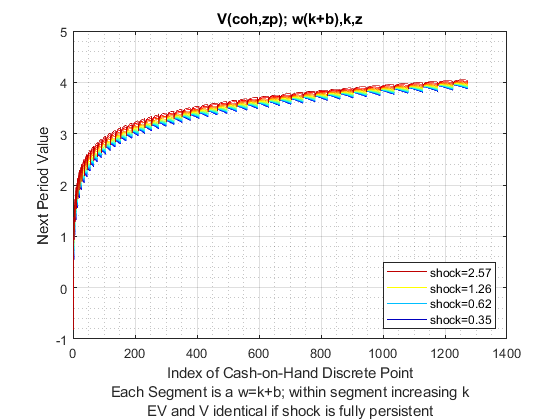
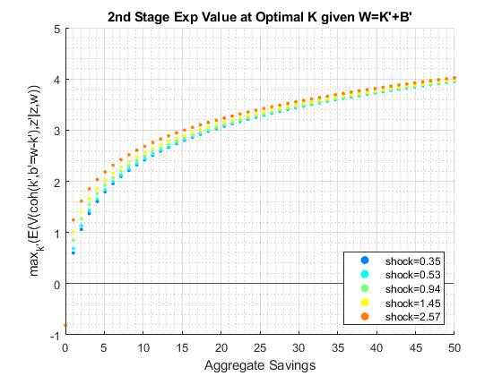
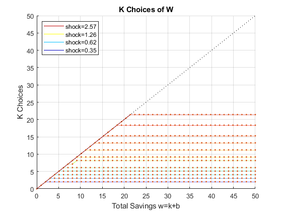
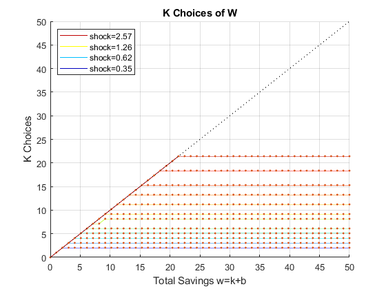

Contents
- FF_WKZ_EVF solves the k' vs b' problem given aggregate savings
- Default
- Parse Parameters
- Integrate E(V(coh(k',b'), z')|z, w)
- Reshape E(V(coh,z'|z,w)) to allow for maxing
- Maximize max_{k'}(E(V(coh(k',b'=w-k'),z'|z,w)) optimal value and index
- Reindex K' and B' Choices for each State at the Optimal w'=k'+b' choice
- Graph
- Graph 1, V and EV
- Graph 2, max(EV), color regions, borrow save
- Graph 3, Optimal K' and B' Levels
back to Fan's Dynamic Assets Repository Table of Content.
function [mt_ev_condi_z_max, mt_ev_condi_z_max_idx, mt_ev_condi_z_max_kp, mt_ev_condi_z_max_bp] = ff_wkz_evf(varargin)
FF_WKZ_EVF solves the k' vs b' problem given aggregate savings
Rather than solving the two asset problem in one shot. We can separate the problem into two stages. This is the second stage of the problem. Here we find the optimal k' choice given w=k'+b'. max_{k'}(E(V(coh(k',b'=w-k'),z'|z,w)) is the maximization problem. Conditional on shock and w. Note that this problem is not conditional on cash-on-hand today, but conditional on w. We do not need to know the cash-on-hand in the current period to find the optimal k' choice conditional on w.
This means we can solve for the optimal relative allocation of risky and safe asset conditional on total savings. Note that we still need the value function mt_val, which is required to find EV.
@param mt_val matrix state_n ((I-1)*J/2+I) by shock_n. This is the value matrix each row is a feasible reachable state given the choice vectors/matrix and each column is a shock state.
@param param_map container parameter container
@param support_map container support container
@param armt_map container container with states, choices and shocks grids that are inputs for grid based solution algorithm
@return mt_ev_condi_z_max matrix choice_w_n by shock_n max_{k'}(E(V(coh(k',b'=w-k'),z'|z,w)) conditional on z and w, at the optimal k' choice (w=k'+b') what is the expected utility? This is the value result from the 2nd stage problem. Note the result integrates over z'.
@return mt_ev_condi_z_max_idx matrix choice_w_n by shock_n this is the argmax from max_{k'}(E(V(coh(k',b'=w-k'),z'|z,w)). Given the vector of k' choices, which index maximized conditional on z and w integrating over z'/
@return mt_ev_condi_z_max_kp matrix choice_w_n by shock_n the k' choice at max_{k'}(E(V(coh(k',b'=w-k'),z'|z,w))
@return mt_ev_condi_z_max_bp matrix choice_w_n by shock_n the b'=w-k' choice at max_{k'}(E(V(coh(k',b'=w-k'),z'|z,w))
@example
@include
Default
params_len = length(varargin); bl_input_override = 0; if (params_len == 5) bl_input_override = varargin{3}; end if (bl_input_override) % override when called from outside [mt_val, param_map, support_map, armt_map, ~] = varargin{:}; else clear all; close all; % Not default parameters, but parameters that generate defaults it_param_set = 4; bl_input_override = true; [param_map, support_map] = ffs_akz_set_default_param(it_param_set); support_map('bl_graph_evf') = true; support_map('bl_display_evf') = true; [armt_map, func_map] = ffs_akz_get_funcgrid(param_map, support_map, bl_input_override); % 1 for override % Generating Defaults params_group = values(armt_map, {'ar_a_meshk', 'ar_k_mesha', 'ar_z'}); [ar_a_meshk, ar_k_mesha, ar_z] = params_group{:}; params_group = values(func_map, {'f_util_standin'}); [f_util_standin] = params_group{:}; mt_val = f_util_standin(ar_z, ar_a_meshk, ar_k_mesha); end
Parse Parameters
params_group = values(armt_map, {'mt_z_trans', 'ar_z',...
'ar_w', 'mt_k_wth_na', 'ar_k_mw_wth_na', 'ar_a_mw_wth_na'});
[mt_z_trans, ar_z, ar_w, mt_k_wth_na, ar_k_mw_wth_na, ar_a_mw_wth_na] = params_group{:};
params_group = values(param_map, {'it_z_n', 'fl_nan_replace', 'fl_b_bd'});
[it_z_n, fl_nan_replace, fl_b_bd] = params_group{:};
params_group = values(support_map, {'bl_graph_onebyones','bl_display_evf', 'bl_graph_evf'});
[bl_graph_onebyones, bl_display_evf, bl_graph_evf] = params_group{:};
params_group = values(support_map, {'bl_img_save', 'st_img_path', 'st_img_prefix', 'st_img_name_main', 'st_img_suffix'});
[bl_img_save, st_img_path, st_img_prefix, st_img_name_main, st_img_suffix] = params_group{:};
% append function name
st_func_name = 'ff_wkz_evf';
st_img_name_main = [st_func_name st_img_name_main];
Integrate E(V(coh(k',b'), z')|z, w)
Each column for a different current state z, each value E(V(coh,z')|z) integrated already Here, each column is a current z, more to right higher EV dim(mt_ev_condi_z): Q by M
mt_ev_condi_z = mt_val*mt_z_trans'; if(bl_display_evf) disp('mt_ev_condi_z: Q by M'); disp(size(mt_ev_condi_z)); summary(array2table(mt_ev_condi_z)); end
mt_ev_condi_z: Q by M
1035 15
Variables:
mt_ev_condi_z1: 1035×1 double
Values:
Min -0.81272
Median 3.5736
Max 3.9289
mt_ev_condi_z2: 1035×1 double
Values:
Min -0.81272
Median 3.5772
Max 3.9304
mt_ev_condi_z3: 1035×1 double
Values:
Min -0.81272
Median 3.5822
Max 3.9322
mt_ev_condi_z4: 1035×1 double
Values:
Min -0.81272
Median 3.5875
Max 3.9344
mt_ev_condi_z5: 1035×1 double
Values:
Min -0.81272
Median 3.5927
Max 3.9371
mt_ev_condi_z6: 1035×1 double
Values:
Min -0.81272
Median 3.5978
Max 3.9402
mt_ev_condi_z7: 1035×1 double
Values:
Min -0.81272
Median 3.6037
Max 3.9439
mt_ev_condi_z8: 1035×1 double
Values:
Min -0.81272
Median 3.6101
Max 3.9484
mt_ev_condi_z9: 1035×1 double
Values:
Min -0.81272
Median 3.6179
Max 3.9536
mt_ev_condi_z10: 1035×1 double
Values:
Min -0.81272
Median 3.627
Max 3.9599
mt_ev_condi_z11: 1035×1 double
Values:
Min -0.81272
Median 3.6373
Max 3.9674
mt_ev_condi_z12: 1035×1 double
Values:
Min -0.81272
Median 3.6497
Max 3.9762
mt_ev_condi_z13: 1035×1 double
Values:
Min -0.81272
Median 3.664
Max 3.9865
mt_ev_condi_z14: 1035×1 double
Values:
Min -0.81272
Median 3.6781
Max 3.9982
mt_ev_condi_z15: 1035×1 double
Values:
Min -0.81272
Median 3.6905
Max 4.0107
Reshape E(V(coh,z'|z,w)) to allow for maxing
dim(mt_ev_condi_z): IxJ by M
[it_mt_bp_rown, it_mt_bp_coln] = size(mt_k_wth_na); mt_ev_condi_z_full = zeros(it_mt_bp_rown*it_mt_bp_coln, it_z_n); mt_ev_condi_z_full(~isnan(ar_k_mw_wth_na),:) = mt_ev_condi_z; mt_ev_condi_z_full(isnan(ar_k_mw_wth_na),:) = fl_nan_replace; mt_ev_condi_z_full = reshape(mt_ev_condi_z_full, [it_mt_bp_rown, it_mt_bp_coln*it_z_n]);
Maximize max_{k'}(E(V(coh(k',b'=w-k'),z'|z,w)) optimal value and index
Maximization, find optimal k'/b' combination given z and w=k'+b'
[ar_ev_condi_z_max, ar_ev_condi_z_max_idx] = max(mt_ev_condi_z_full); mt_ev_condi_z_max = reshape(ar_ev_condi_z_max, [it_mt_bp_coln, it_z_n]); mt_ev_condi_z_max_idx = reshape(ar_ev_condi_z_max_idx, [it_mt_bp_coln, it_z_n]); if(bl_display_evf) disp('mt_ev_condi_z_full: J by IxM'); disp(size(mt_ev_condi_z_full)); % disp(mt_ev_condi_z_full); disp('mt_ev_condi_z_max: I by M'); disp(size(mt_ev_condi_z_max)); summary(array2table(mt_ev_condi_z_max)); disp('mt_ev_condi_z_max_idx: I by M'); disp(size(mt_ev_condi_z_max_idx)); disp(mt_ev_condi_z_max_idx); end
mt_ev_condi_z_full: J by IxM
45 675
mt_ev_condi_z_max: I by M
45 15
Variables:
mt_ev_condi_z_max1: 45×1 double
Values:
Min -0.81272
Median 3.2524
Max 3.9289
mt_ev_condi_z_max2: 45×1 double
Values:
Min -0.81272
Median 3.2553
Max 3.9304
mt_ev_condi_z_max3: 45×1 double
Values:
Min -0.81272
Median 3.2588
Max 3.9322
mt_ev_condi_z_max4: 45×1 double
Values:
Min -0.81272
Median 3.2632
Max 3.9344
mt_ev_condi_z_max5: 45×1 double
Values:
Min -0.81272
Median 3.2683
Max 3.9371
mt_ev_condi_z_max6: 45×1 double
Values:
Min -0.81272
Median 3.2744
Max 3.9402
mt_ev_condi_z_max7: 45×1 double
Values:
Min -0.81272
Median 3.2816
Max 3.9439
mt_ev_condi_z_max8: 45×1 double
Values:
Min -0.81272
Median 3.2902
Max 3.9484
mt_ev_condi_z_max9: 45×1 double
Values:
Min -0.81272
Median 3.3004
Max 3.9536
mt_ev_condi_z_max10: 45×1 double
Values:
Min -0.81272
Median 3.3123
Max 3.9599
mt_ev_condi_z_max11: 45×1 double
Values:
Min -0.81272
Median 3.3265
Max 3.9674
mt_ev_condi_z_max12: 45×1 double
Values:
Min -0.81272
Median 3.3431
Max 3.9762
mt_ev_condi_z_max13: 45×1 double
Values:
Min -0.81272
Median 3.3623
Max 3.9865
mt_ev_condi_z_max14: 45×1 double
Values:
Min -0.81272
Median 3.3837
Max 3.9982
mt_ev_condi_z_max15: 45×1 double
Values:
Min -0.81272
Median 3.4051
Max 4.0107
mt_ev_condi_z_max_idx: I by M
45 15
Columns 1 through 13
1 1 1 1 1 1 1 1 1 1 1 1 1
2 2 2 2 2 2 2 2 2 2 2 2 2
3 3 3 3 3 3 3 3 3 3 3 3 3
4 4 4 4 4 4 4 4 4 4 4 4 4
4 4 5 5 5 5 5 5 5 5 5 5 5
4 4 5 5 6 6 6 6 6 6 6 6 6
4 4 5 5 6 7 7 7 7 7 7 7 7
4 4 5 5 6 7 8 8 8 8 8 8 8
4 4 5 5 6 7 8 9 9 9 9 9 9
4 4 5 5 6 7 8 10 10 10 10 10 10
4 4 5 5 6 7 8 10 11 11 11 11 11
4 4 5 5 6 7 8 10 11 12 12 12 12
4 4 5 5 6 7 8 10 11 13 13 13 13
4 4 5 5 6 7 8 10 11 13 14 14 14
4 4 5 5 6 7 8 10 11 13 15 15 15
4 4 5 5 6 7 8 10 11 13 16 16 16
4 4 5 5 6 7 8 10 11 13 16 17 17
4 4 5 5 6 7 8 10 11 13 16 18 18
4 4 5 5 6 7 8 10 11 13 16 19 19
4 4 5 5 6 7 8 10 11 13 16 19 20
4 4 5 5 6 7 8 10 11 13 16 19 21
4 4 5 5 6 7 8 10 11 13 16 19 22
4 4 5 5 6 7 8 10 11 13 16 19 22
4 4 5 5 6 7 8 10 11 13 16 19 22
4 4 5 5 6 7 8 10 11 13 16 19 22
4 4 5 5 6 7 8 10 11 13 16 19 22
4 4 5 5 6 7 8 10 11 13 16 19 22
4 4 5 5 6 7 8 10 11 13 16 19 22
4 4 5 5 6 7 8 10 11 13 16 19 22
4 4 5 5 6 7 8 10 11 13 16 19 22
4 4 5 5 6 7 8 10 11 13 16 19 22
4 4 5 5 6 7 8 10 11 13 16 19 22
4 4 5 5 6 7 8 10 11 13 16 19 22
4 4 5 5 6 7 8 10 11 13 16 19 22
4 4 5 5 6 7 8 10 11 13 16 19 22
4 4 5 5 6 7 8 10 11 13 16 19 22
4 4 5 5 6 7 8 10 11 13 16 19 22
4 4 5 5 6 7 8 10 11 13 16 19 22
4 4 5 5 6 7 8 10 11 13 16 19 22
4 4 5 5 6 7 8 10 11 13 16 19 22
4 4 5 5 6 7 8 10 11 13 16 19 22
4 4 5 5 6 7 8 10 11 13 16 19 22
4 4 5 5 6 7 8 10 11 13 16 19 22
4 4 5 5 6 7 8 10 11 13 16 19 22
4 4 5 5 6 7 8 10 11 13 16 19 22
Columns 14 through 15
1 1
2 2
3 3
4 4
5 5
6 6
7 7
8 8
9 9
10 10
11 11
12 12
13 13
14 14
15 15
16 16
17 17
18 18
19 19
20 20
21 21
22 22
23 23
24 24
25 25
26 26
26 27
26 28
26 29
26 30
26 30
26 30
26 30
26 30
26 30
26 30
26 30
26 30
26 30
26 30
26 30
26 30
26 30
26 30
26 30
Reindex K' and B' Choices for each State at the Optimal w'=k'+b' choice
The K' and B' Optimal Choices Associated with EV opti dim(mt_ev_condi_z_max_kp): I by M
ar_add_grid = linspace(0, it_mt_bp_rown*(it_mt_bp_coln-1), it_mt_bp_coln); mt_ev_condi_z_max_idx = mt_ev_condi_z_max_idx + ar_add_grid'; if(bl_display_evf) disp('mt_ev_condi_z_max_idx: I by M'); disp(size(mt_ev_condi_z_max_idx)); disp(mt_ev_condi_z_max_idx(1:it_mt_bp_coln,:)); end mt_ev_condi_z_max_kp = reshape(ar_k_mw_wth_na(mt_ev_condi_z_max_idx(:)), [it_mt_bp_coln, it_z_n]); mt_ev_condi_z_max_bp = reshape(ar_a_mw_wth_na(mt_ev_condi_z_max_idx(:)), [it_mt_bp_coln, it_z_n]); if(bl_display_evf) disp('mt_ev_condi_z_max_kp: I by M'); disp(size(mt_ev_condi_z_max_kp)); summary(array2table(mt_ev_condi_z_max_kp)); disp('mt_ev_condi_z_max_bp: I by M'); disp(size(mt_ev_condi_z_max_bp)); summary(array2table(mt_ev_condi_z_max_bp)); end
mt_ev_condi_z_max_idx: I by M
45 15
Columns 1 through 6
1 1 1 1 1 1
47 47 47 47 47 47
93 93 93 93 93 93
139 139 139 139 139 139
184 184 185 185 185 185
229 229 230 230 231 231
274 274 275 275 276 277
319 319 320 320 321 322
364 364 365 365 366 367
409 409 410 410 411 412
454 454 455 455 456 457
499 499 500 500 501 502
544 544 545 545 546 547
589 589 590 590 591 592
634 634 635 635 636 637
679 679 680 680 681 682
724 724 725 725 726 727
769 769 770 770 771 772
814 814 815 815 816 817
859 859 860 860 861 862
904 904 905 905 906 907
949 949 950 950 951 952
994 994 995 995 996 997
1039 1039 1040 1040 1041 1042
1084 1084 1085 1085 1086 1087
1129 1129 1130 1130 1131 1132
1174 1174 1175 1175 1176 1177
1219 1219 1220 1220 1221 1222
1264 1264 1265 1265 1266 1267
1309 1309 1310 1310 1311 1312
1354 1354 1355 1355 1356 1357
1399 1399 1400 1400 1401 1402
1444 1444 1445 1445 1446 1447
1489 1489 1490 1490 1491 1492
1534 1534 1535 1535 1536 1537
1579 1579 1580 1580 1581 1582
1624 1624 1625 1625 1626 1627
1669 1669 1670 1670 1671 1672
1714 1714 1715 1715 1716 1717
1759 1759 1760 1760 1761 1762
1804 1804 1805 1805 1806 1807
1849 1849 1850 1850 1851 1852
1894 1894 1895 1895 1896 1897
1939 1939 1940 1940 1941 1942
1984 1984 1985 1985 1986 1987
Columns 7 through 12
1 1 1 1 1 1
47 47 47 47 47 47
93 93 93 93 93 93
139 139 139 139 139 139
185 185 185 185 185 185
231 231 231 231 231 231
277 277 277 277 277 277
323 323 323 323 323 323
368 369 369 369 369 369
413 415 415 415 415 415
458 460 461 461 461 461
503 505 506 507 507 507
548 550 551 553 553 553
593 595 596 598 599 599
638 640 641 643 645 645
683 685 686 688 691 691
728 730 731 733 736 737
773 775 776 778 781 783
818 820 821 823 826 829
863 865 866 868 871 874
908 910 911 913 916 919
953 955 956 958 961 964
998 1000 1001 1003 1006 1009
1043 1045 1046 1048 1051 1054
1088 1090 1091 1093 1096 1099
1133 1135 1136 1138 1141 1144
1178 1180 1181 1183 1186 1189
1223 1225 1226 1228 1231 1234
1268 1270 1271 1273 1276 1279
1313 1315 1316 1318 1321 1324
1358 1360 1361 1363 1366 1369
1403 1405 1406 1408 1411 1414
1448 1450 1451 1453 1456 1459
1493 1495 1496 1498 1501 1504
1538 1540 1541 1543 1546 1549
1583 1585 1586 1588 1591 1594
1628 1630 1631 1633 1636 1639
1673 1675 1676 1678 1681 1684
1718 1720 1721 1723 1726 1729
1763 1765 1766 1768 1771 1774
1808 1810 1811 1813 1816 1819
1853 1855 1856 1858 1861 1864
1898 1900 1901 1903 1906 1909
1943 1945 1946 1948 1951 1954
1988 1990 1991 1993 1996 1999
Columns 13 through 15
1 1 1
47 47 47
93 93 93
139 139 139
185 185 185
231 231 231
277 277 277
323 323 323
369 369 369
415 415 415
461 461 461
507 507 507
553 553 553
599 599 599
645 645 645
691 691 691
737 737 737
783 783 783
829 829 829
875 875 875
921 921 921
967 967 967
1012 1013 1013
1057 1059 1059
1102 1105 1105
1147 1151 1151
1192 1196 1197
1237 1241 1243
1282 1286 1289
1327 1331 1335
1372 1376 1380
1417 1421 1425
1462 1466 1470
1507 1511 1515
1552 1556 1560
1597 1601 1605
1642 1646 1650
1687 1691 1695
1732 1736 1740
1777 1781 1785
1822 1826 1830
1867 1871 1875
1912 1916 1920
1957 1961 1965
2002 2006 2010
mt_ev_condi_z_max_kp: I by M
45 15
Variables:
mt_ev_condi_z_max_kp1: 45×1 double
Values:
Min 0
Median 3.4091
Max 3.4091
mt_ev_condi_z_max_kp2: 45×1 double
Values:
Min 0
Median 3.4091
Max 3.4091
mt_ev_condi_z_max_kp3: 45×1 double
Values:
Min 0
Median 4.5455
Max 4.5455
mt_ev_condi_z_max_kp4: 45×1 double
Values:
Min 0
Median 4.5455
Max 4.5455
mt_ev_condi_z_max_kp5: 45×1 double
Values:
Min 0
Median 5.6818
Max 5.6818
mt_ev_condi_z_max_kp6: 45×1 double
Values:
Min 0
Median 6.8182
Max 6.8182
mt_ev_condi_z_max_kp7: 45×1 double
Values:
Min 0
Median 7.9545
Max 7.9545
mt_ev_condi_z_max_kp8: 45×1 double
Values:
Min 0
Median 10.227
Max 10.227
mt_ev_condi_z_max_kp9: 45×1 double
Values:
Min 0
Median 11.364
Max 11.364
mt_ev_condi_z_max_kp10: 45×1 double
Values:
Min 0
Median 13.636
Max 13.636
mt_ev_condi_z_max_kp11: 45×1 double
Values:
Min 0
Median 17.045
Max 17.045
mt_ev_condi_z_max_kp12: 45×1 double
Values:
Min 0
Median 20.455
Max 20.455
mt_ev_condi_z_max_kp13: 45×1 double
Values:
Min 0
Median 23.864
Max 23.864
mt_ev_condi_z_max_kp14: 45×1 double
Values:
Min 0
Median 25
Max 28.409
mt_ev_condi_z_max_kp15: 45×1 double
Values:
Min 0
Median 25
Max 32.955
mt_ev_condi_z_max_bp: I by M
45 15
Variables:
mt_ev_condi_z_max_bp1: 45×1 double
Values:
Min 0
Median 21.591
Max 46.591
mt_ev_condi_z_max_bp2: 45×1 double
Values:
Min 0
Median 21.591
Max 46.591
mt_ev_condi_z_max_bp3: 45×1 double
Values:
Min 0
Median 20.455
Max 45.455
mt_ev_condi_z_max_bp4: 45×1 double
Values:
Min 0
Median 20.455
Max 45.455
mt_ev_condi_z_max_bp5: 45×1 double
Values:
Min 0
Median 19.318
Max 44.318
mt_ev_condi_z_max_bp6: 45×1 double
Values:
Min 0
Median 18.182
Max 43.182
mt_ev_condi_z_max_bp7: 45×1 double
Values:
Min 0
Median 17.045
Max 42.045
mt_ev_condi_z_max_bp8: 45×1 double
Values:
Min 0
Median 14.773
Max 39.773
mt_ev_condi_z_max_bp9: 45×1 double
Values:
Min 0
Median 13.636
Max 38.636
mt_ev_condi_z_max_bp10: 45×1 double
Values:
Min 0
Median 11.364
Max 36.364
mt_ev_condi_z_max_bp11: 45×1 double
Values:
Min 0
Median 7.9545
Max 32.955
mt_ev_condi_z_max_bp12: 45×1 double
Values:
Min 0
Median 4.5455
Max 29.545
mt_ev_condi_z_max_bp13: 45×1 double
Values:
Min 0
Median 1.1364
Max 26.136
mt_ev_condi_z_max_bp14: 45×1 double
Values:
Min 0
Median 0
Max 21.591
mt_ev_condi_z_max_bp15: 45×1 double
Values:
Min 0
Median 0
Max 17.045
Graph
if (bl_graph_evf)
Graph 1, V and EV
if (~bl_graph_onebyones) figure('PaperPosition', [0 0 14 4]); hold on; end for subplot_j=1:1:2 if (~bl_graph_onebyones) hAxis(subplot_j) = subplot(1,2,subplot_j); else figure('PaperPosition', [0 0 7 4]); end if (subplot_j==1) chart = plot(mt_val); end if (subplot_j==2) chart = plot(mt_ev_condi_z); end clr = jet(numel(chart)); for m = 1:numel(chart) set(chart(m),'Color',clr(m,:)) end legend2plot = fliplr([1 round(numel(chart)/3) round((2*numel(chart))/3) numel(chart)]); legendCell = cellstr(num2str(ar_z', 'shock=%3.2f')); legend(chart(legend2plot), legendCell(legend2plot), 'Location','southeast'); if (subplot_j==1) title('V(coh,zp); w(k+b),k,z'); end if (subplot_j==2) title('E_z(V(coh,zp|z))'); end ylabel('Next Period Value'); xlabel({'Index of Cash-on-Hand Discrete Point'... 'Each Segment is a w=k+b; within segment increasing k'... 'EV and V identical if shock is fully persistent'}); grid on; grid minor; end % Share y axis if (~bl_graph_onebyones) linkaxes(hAxis,'y'); end % save file if (bl_img_save) mkdir(support_map('st_img_path')); st_file_name = [st_img_prefix st_img_name_main '_vev' st_img_suffix]; saveas(gcf, strcat(st_img_path, st_file_name)); end

Graph 2, max(EV), color regions, borrow save
% Borrow Vs Save [ar_z_mw, ar_w_mz] = meshgrid(ar_z, ar_w); mt_it_borr_idx = (mt_ev_condi_z_max_bp < 0); mt_it_riskyhalf_idx = ((mt_ev_condi_z_max_kp./mt_ev_condi_z_max_bp) > 0.5); mt_it_kzero_idx = (mt_ev_condi_z_max_kp == 0); mt_it_isnan_idx = (isnan(mt_ev_condi_z_max_kp)); figure('PaperPosition', [0 0 7 4]); % States: ar_w, ar_z % Choices: mt_ev_condi_z_max_kp, mt_ev_condi_z_max_bp hold on; it_sca_size = 10; chart_br = scatter(ar_w_mz(mt_it_borr_idx),... ar_z_mw(mt_it_borr_idx),... it_sca_size, 'blue', 'filled'); % legend([chart_br], {'Borrow'}, 'Location','northeast'); chart_khalf = scatter(ar_w_mz(~mt_it_borr_idx & mt_it_riskyhalf_idx),... ar_z_mw(~mt_it_borr_idx & mt_it_riskyhalf_idx),... it_sca_size, 'black', 'filled'); % legend([chart_khalf], {'Save >0.5 K'}, 'Location','northeast'); chart_sv = scatter(ar_w_mz(~mt_it_borr_idx & ~mt_it_riskyhalf_idx),... ar_z_mw(~mt_it_borr_idx & ~mt_it_riskyhalf_idx),... it_sca_size, 'red', 'filled'); % legend([chart_sv], {'Save <0.5 K'}, 'Location','northeast'); chart_invalid = scatter(ar_w_mz(mt_it_kzero_idx | mt_it_isnan_idx),... ar_z_mw(mt_it_kzero_idx | mt_it_isnan_idx),... it_sca_size, 'yellow', 'filled'); legend([chart_br, chart_khalf, chart_sv, chart_invalid], ... {'Borrow','Save >0.5 K','Save <0.5 K', 'k=0 or k=nan'}, 'Location','northeast'); title('Borrow and Save Regions') ylabel('Shocks') xlabel({'Total Savings w=k+b'}) grid on; % save file if (bl_img_save) mkdir(support_map('st_img_path')); st_file_name = [st_img_prefix st_img_name_main '_maxev' st_img_suffix]; saveas(gcf, strcat(st_img_path, st_file_name)); end
Graph 3, Optimal K' and B' Levels
[~, ar_w_mz] = meshgrid(ar_z, ar_w);
for sub_j=1:1:4
if (bl_graph_onebyones)
figure('PaperPosition', [0 0 7 4]);
end
if (sub_j==1)
if(~bl_graph_onebyones)
figure('PaperPosition', [0 0 14 4]);
subplot(1,2,sub_j);
end
mt_y = mt_ev_condi_z_max_bp;
end
if (sub_j==2)
if(~bl_graph_onebyones)
subplot(1,2,sub_j);
end
mt_y = mt_ev_condi_z_max_kp;
end
if (sub_j==3)
if(~bl_graph_onebyones)
figure('PaperPosition', [0 0 14 4]);
subplot(1,2,sub_j-2);
end
mt_y = zeros(size(mt_ev_condi_z_max_bp));
mt_it_borr_idx = (mt_ev_condi_z_max_bp < 0);
mt_y(mt_it_borr_idx) = -mt_ev_condi_z_max_bp(mt_it_borr_idx)/fl_b_bd;
mt_y(~mt_it_borr_idx) = mt_ev_condi_z_max_bp(~mt_it_borr_idx)./ar_w_mz(~mt_it_borr_idx);
end
if (sub_j==4)
if(~bl_graph_onebyones)
subplot(1,2,sub_j-2);
end
mt_y = mt_ev_condi_z_max_kp./(ar_w'-fl_b_bd);
end
hold on;
chart = plot(ar_w, mt_y);
clr = jet(numel(chart));
if (length(ar_w) <= 50)
scatter(ar_w_mz(:), mt_y(:), 5, 'filled');
end
for m = 1:numel(chart)
set(chart(m),'Color',clr(m,:))
end
legend2plot = fliplr([1 round(numel(chart)/3) round((2*numel(chart))/3) numel(chart)]);
legendCell = cellstr(num2str(ar_z', 'shock=%3.2f'));
xline0 = xline(0);
xline0.HandleVisibility = 'off';
yline0 = yline(0);
yline0.HandleVisibility = 'off';
grid on;
if (sub_j<=2)
hline = refline([1 0]);
hline.Color = 'k';
hline.LineStyle = ':';
hline.HandleVisibility = 'off';
end
if (sub_j==1)
title('B Choices of W');
ylabel('B Choices');
xlabel({'Total Savings w=k+b'});
legend(chart(legend2plot), legendCell(legend2plot), 'Location','northwest');
end
if (sub_j==2)
title('K Choices of W');
ylabel('K Choices');
xlabel({'Total Savings w=k+b'});
legend(chart(legend2plot), legendCell(legend2plot), 'Location','northwest');
end
if (sub_j==3)
title('B Fraction of Borrow Max and Save');
ylabel('B/bar(B) if br or B/W if sv');
xlabel({'Total Savings w=k+b'});
% set(gca, 'YScale', 'log');
ylim([-1.1 1.1]);
legend(chart(legend2plot), legendCell(legend2plot), 'Location','northwest');
end
if (sub_j==4)
title('K Fraction Choices of Total K Possible');
ylabel('K/(W-bar(b)) ');
xlabel({'Total Savings w=k+b'});
% set(gca, 'YScale', 'log');
ylim([0 1.1]);
legend(chart(legend2plot), legendCell(legend2plot), 'Location','northeast');
end
end
% save file
if (bl_img_save)
mkdir(support_map('st_img_path'));
st_file_name = [st_img_prefix st_img_name_main '_wkbopti' st_img_suffix];
saveas(gcf, strcat(st_img_path, st_file_name));
end
 
 
end
end
ans =
Columns 1 through 7
-0.8127 -0.8127 -0.8127 -0.8127 -0.8127 -0.8127 -0.8127
0.6658 0.6915 0.7209 0.7535 0.7888 0.8271 0.8682
1.1383 1.1589 1.1828 1.2092 1.2381 1.2696 1.3037
1.4492 1.4667 1.4870 1.5097 1.5345 1.5617 1.5913
1.6857 1.6996 1.7159 1.7360 1.7580 1.7821 1.8085
1.8768 1.8884 1.9019 1.9186 1.9380 1.9599 1.9839
2.0372 2.0471 2.0587 2.0730 2.0897 2.1092 2.1313
2.1754 2.1840 2.1941 2.2066 2.2213 2.2384 2.2586
2.2968 2.3044 2.3134 2.3245 2.3375 2.3529 2.3708
2.4050 2.4119 2.4200 2.4299 2.4417 2.4555 2.4718
2.5027 2.5089 2.5162 2.5253 2.5360 2.5486 2.5634
2.5916 2.5973 2.6040 2.6124 2.6222 2.6337 2.6474
2.6733 2.6786 2.6848 2.6924 2.7015 2.7122 2.7248
2.7488 2.7537 2.7595 2.7666 2.7750 2.7850 2.7967
2.8190 2.8236 2.8290 2.8356 2.8435 2.8528 2.8637
2.8847 2.8889 2.8939 2.9002 2.9075 2.9163 2.9266
2.9462 2.9502 2.9549 2.9608 2.9678 2.9760 2.9857
3.0042 3.0080 3.0124 3.0180 3.0245 3.0323 3.0415
3.0590 3.0626 3.0668 3.0721 3.0783 3.0857 3.0944
3.1110 3.1144 3.1184 3.1234 3.1293 3.1363 3.1446
3.1604 3.1636 3.1674 3.1722 3.1778 3.1845 3.1924
3.2074 3.2105 3.2142 3.2187 3.2241 3.2305 3.2380
3.2524 3.2553 3.2588 3.2632 3.2683 3.2744 3.2816
3.2954 3.2982 3.3016 3.3057 3.3107 3.3165 3.3234
3.3366 3.3393 3.3426 3.3466 3.3513 3.3569 3.3636
3.3763 3.3789 3.3820 3.3858 3.3903 3.3957 3.4022
3.4144 3.4169 3.4198 3.4235 3.4279 3.4331 3.4393
3.4511 3.4535 3.4563 3.4599 3.4641 3.4692 3.4751
3.4865 3.4888 3.4916 3.4950 3.4991 3.5039 3.5097
3.5207 3.5229 3.5256 3.5289 3.5329 3.5375 3.5431
3.5537 3.5559 3.5585 3.5617 3.5655 3.5701 3.5755
3.5857 3.5878 3.5903 3.5935 3.5972 3.6016 3.6068
3.6167 3.6188 3.6212 3.6242 3.6278 3.6321 3.6372
3.6468 3.6488 3.6512 3.6541 3.6576 3.6617 3.6666
3.6760 3.6779 3.6802 3.6831 3.6865 3.6905 3.6953
3.7044 3.7063 3.7085 3.7113 3.7145 3.7185 3.7231
3.7320 3.7338 3.7360 3.7387 3.7419 3.7457 3.7502
3.7588 3.7606 3.7627 3.7653 3.7684 3.7722 3.7766
3.7850 3.7867 3.7888 3.7913 3.7943 3.7980 3.8023
3.8104 3.8121 3.8141 3.8166 3.8196 3.8231 3.8273
3.8353 3.8369 3.8389 3.8413 3.8442 3.8477 3.8517
3.8595 3.8611 3.8630 3.8654 3.8682 3.8716 3.8756
3.8832 3.8848 3.8866 3.8890 3.8917 3.8950 3.8989
3.9063 3.9079 3.9097 3.9119 3.9146 3.9178 3.9217
3.9289 3.9304 3.9322 3.9344 3.9371 3.9402 3.9439
Columns 8 through 14
-0.8127 -0.8127 -0.8127 -0.8127 -0.8127 -0.8127 -0.8127
0.9124 0.9597 1.0101 1.0638 1.1205 1.1801 1.2411
1.3406 1.3803 1.4231 1.4689 1.5178 1.5694 1.6227
1.6234 1.6582 1.6958 1.7363 1.7798 1.8259 1.8737
1.8373 1.8685 1.9024 1.9391 1.9785 2.0206 2.0644
2.0101 2.0387 2.0697 2.1034 2.1397 2.1786 2.2192
2.1555 2.1819 2.2107 2.2419 2.2758 2.3121 2.3501
2.2811 2.3057 2.3327 2.3620 2.3938 2.4279 2.4637
2.3918 2.4150 2.4403 2.4680 2.4980 2.5304 2.5643
2.4908 2.5127 2.5368 2.5630 2.5915 2.6223 2.6546
2.5808 2.6013 2.6241 2.6491 2.6763 2.7057 2.7366
2.6634 2.6823 2.7040 2.7279 2.7540 2.7821 2.8118
2.7397 2.7572 2.7776 2.8005 2.8256 2.8527 2.8812
2.8105 2.8268 2.8460 2.8680 2.8921 2.9181 2.9457
2.8767 2.8920 2.9099 2.9308 2.9541 2.9793 3.0059
2.9388 2.9531 2.9700 2.9898 3.0123 3.0367 3.0625
2.9972 3.0107 3.0267 3.0454 3.0671 3.0907 3.1157
3.0524 3.0652 3.0803 3.0981 3.1188 3.1418 3.1661
3.1047 3.1169 3.1313 3.1481 3.1679 3.1902 3.2139
3.1544 3.1660 3.1797 3.1958 3.2146 3.2363 3.2593
3.2017 3.2128 3.2259 3.2413 3.2593 3.2802 3.3026
3.2470 3.2575 3.2701 3.2848 3.3021 3.3221 3.3440
3.2902 3.3004 3.3123 3.3265 3.3431 3.3623 3.3837
3.3317 3.3414 3.3529 3.3665 3.3824 3.4010 3.4217
3.3715 3.3808 3.3919 3.4050 3.4203 3.4382 3.4583
3.4098 3.4188 3.4294 3.4420 3.4568 3.4740 3.4935
3.4466 3.4553 3.4656 3.4778 3.4920 3.5087 3.5275
3.4822 3.4906 3.5005 3.5123 3.5261 3.5421 3.5604
3.5165 3.5246 3.5342 3.5456 3.5590 3.5745 3.5922
3.5497 3.5576 3.5669 3.5779 3.5908 3.6059 3.6230
3.5819 3.5895 3.5985 3.6091 3.6217 3.6363 3.6529
3.6130 3.6204 3.6291 3.6394 3.6516 3.6658 3.6819
3.6432 3.6503 3.6588 3.6689 3.6807 3.6945 3.7102
3.6725 3.6794 3.6877 3.6974 3.7089 3.7224 3.7376
3.7010 3.7077 3.7157 3.7252 3.7364 3.7495 3.7643
3.7286 3.7352 3.7430 3.7522 3.7631 3.7759 3.7903
3.7556 3.7620 3.7696 3.7786 3.7892 3.8016 3.8157
3.7818 3.7880 3.7954 3.8042 3.8146 3.8267 3.8404
3.8074 3.8134 3.8207 3.8292 3.8393 3.8511 3.8645
3.8323 3.8382 3.8453 3.8536 3.8635 3.8750 3.8881
3.8566 3.8624 3.8693 3.8774 3.8870 3.8983 3.9111
3.8803 3.8860 3.8927 3.9007 3.9101 3.9211 3.9336
3.9035 3.9091 3.9156 3.9234 3.9326 3.9434 3.9556
3.9262 3.9316 3.9380 3.9456 3.9546 3.9652 3.9771
3.9484 3.9536 3.9599 3.9674 3.9762 3.9865 3.9982
Column 15
-0.8127
1.3001
1.6745
1.9205
2.1073
2.2591
2.3875
2.4991
2.5979
2.6866
2.7673
2.8412
2.9095
2.9730
3.0324
3.0881
3.1406
3.1903
3.2374
3.2823
3.3250
3.3659
3.4051
3.4427
3.4788
3.5136
3.5471
3.5795
3.6108
3.6412
3.6705
3.6991
3.7268
3.7538
3.7801
3.8057
3.8307
3.8550
3.8788
3.9021
3.9248
3.9470
3.9687
3.9899
4.0107